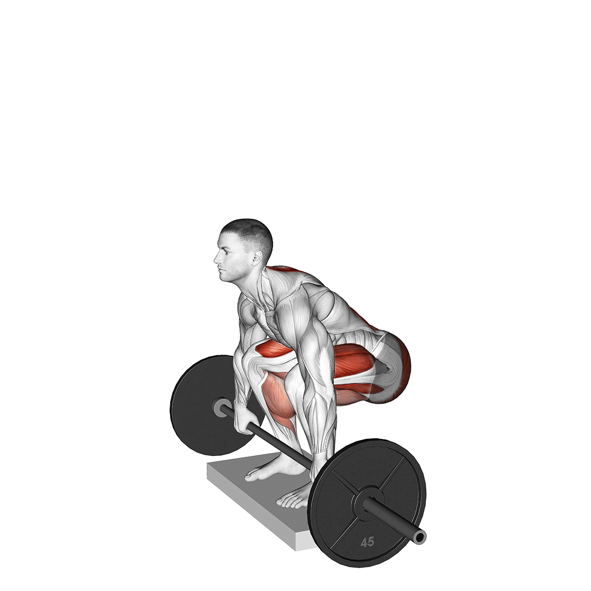

💀 데드리프트

운동 부위
척추기립근, 햄스트링, 둔근, 전완근 등 후면사슬운동
운동 설명
웨이트 트레이닝을 대표하는 3대 운동 중 하나이다.
데드리프트는 전신의 근육을 복합적으로 활용하는 효율적, 효과적인 운동이며
전신의 힘을 기르기 위해 누구라도 강력히 추천하는 운동이다.
주의사항
- 반드시 척추 중립 상태 유지, 꺾이거나 말리면 허리 부상 당할 수 있음
- 시선은 2m 앞 바닥을 본다는 느낌, 턱을 너무 당기거나 들지 않기
- 바벨은 정강이 가까이에서 시작하고, 항상 몸에 봍여서 이동
- *초보자는 컨벤셔녈 데드리프트가 아닌 루마니안 데드리프트를 해도 좋음*